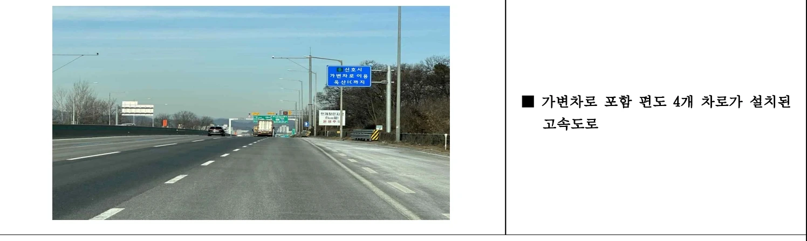

745. Дараах нөхцөлд аюулгүй жолоодох арга биш 2-ыг сонгоно уу.

- ①Хувьсах эгнээгээр явж болохгүй.
- ②1 км-ийн цаана манан байнга тогтдог бүс тул анхааран жолоодно.
- ③Хэсгийн хурдны хяналтын эхлэл ойртож байгаа тул хяналтын камерыг тойрон замын захаар явна.
- ④Ачааны автомашин гүйцэж түрүүлэхдээ 2-р эгнээгээр явж болно.
- ⑤Хурдны зам дээр ачааны автомашины зорчигч аюулгүйн бүсээ бүслэх үүрэггүй.
Хариулт харах
Зөв хариулт
③ Хэсгийн хурдны хяналтын эхлэл ойртож байгаа тул хяналтын камерыг тойрон замын захаар явна.
⑤ Хурдны зам дээр ачааны автомашины зорчигч аюулгүйн бүсээ бүслэх үүрэггүй.
Үндэслэл
Хурдны зам дээр гэнэт тоормослох, хурдацтай удаашрах тохиолдолд осол гарах эрсдэл өндөр байдаг. Автомашины жолооч (хоёр дугуйтай тээврийн хэрэгслээс бусад) машин жолоодохдоо хамгаалах бүс зүүсэн байх ёстой бөгөөд суудалд сууж буй бүх зорчигчид хамгаалалтын бүс зүүсэн байх ёстой (нярай болон бага насны хүүхдүүдийн хувьд энэ нь хүүхэд хамгаалах хэрэгслийг суурилуулсны дараа хамгаалах бүсийг хэлнэ. Цаашид энэ зүйл болон 160-р зүйлийн 2-ын 2) ЗХ-ийн 5-р зүйлд мөн адил хамаарна.
Үндэслэлийн текст нь машин орчуулга.